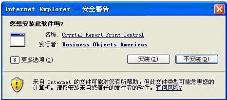
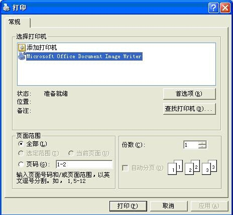
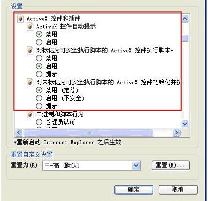

| ActiveX安装步骤 |
| 1.首先建议将相应网站加入可信站点。 |
| 2.在IE浏览器上，点击打印页面的打印图标，右键单击浏览器顶部出现的“阻止窗口”对话框，选定“总是允许来自此站点的弹出窗口”，单击“是”按钮确认，并单击弹出窗口中的“重试”按钮，弹出“Crystal Reports Viewer”对话框；稍后弹出“Crystal Report Print Control 软件安装”对话框,如下图。 |
|  |
| 单击“安装”按钮，如有防病毒软件提示，请选择允许其安装；安装完成后，弹出“打印对话框”，如下图。 |
|  |
| 3.安装打印插件时，如果无法安装，单击IE浏览器中的“工具”下的“Internet选项”，弹出“Internet选项”对话框，单击“安全”标签，单击“自定义级别”后打开“安全设置”窗口，将下图中所示所有ActiveX选项设为“启用” |
|  |